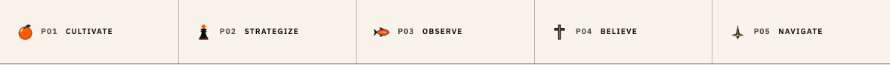
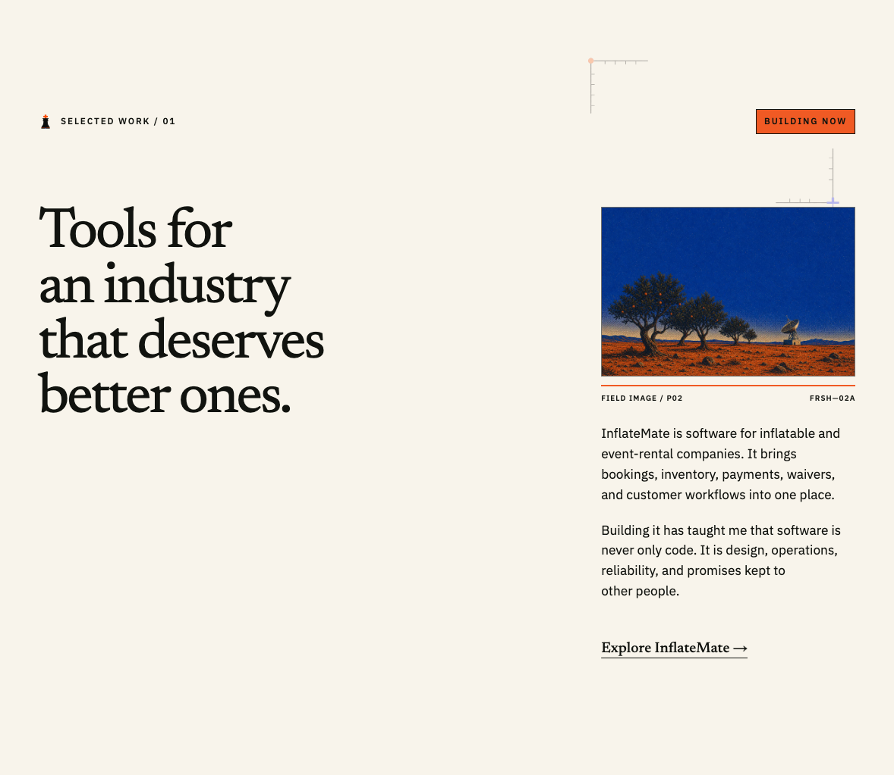
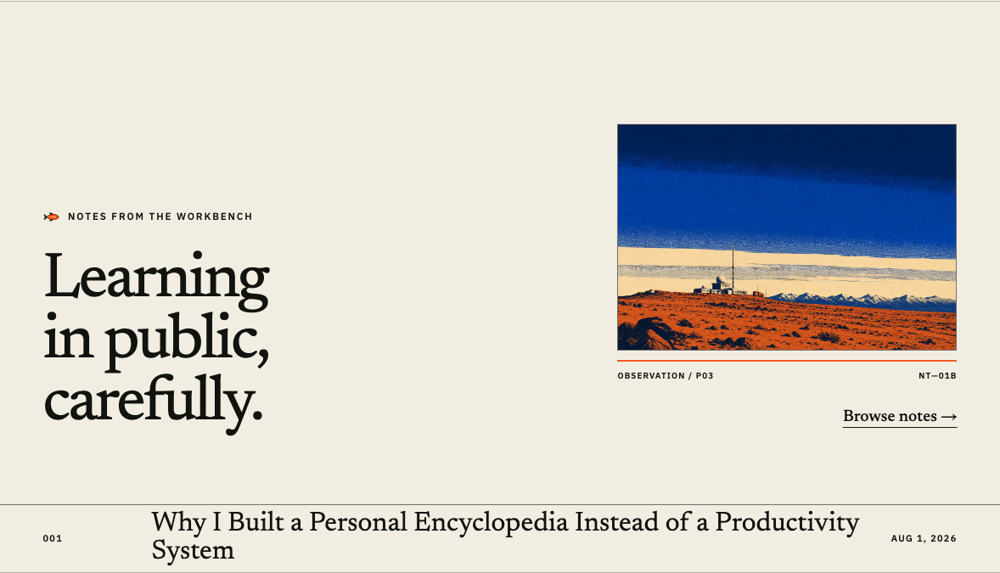
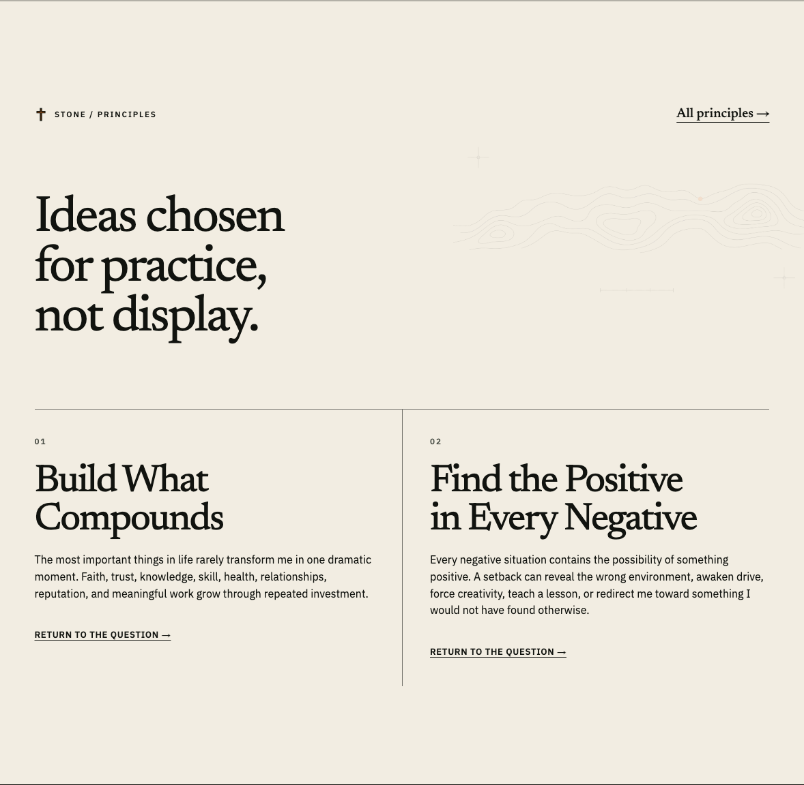
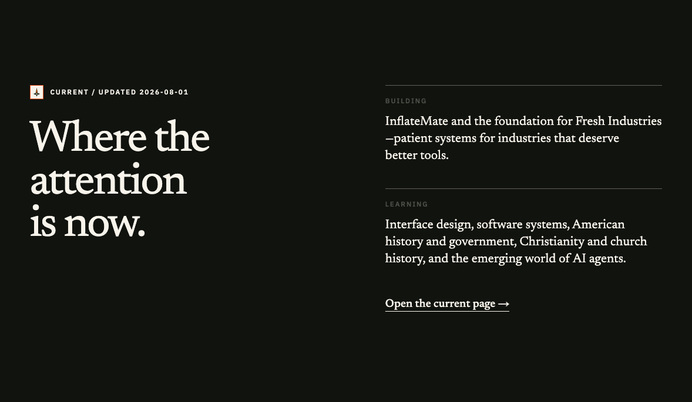

Personal Field Marks / V1
Generated source symbols above. Browser-rendered editorial placements below. Orange, king, fish, cross, and compass form one repeatable personal language.
Generated source system






